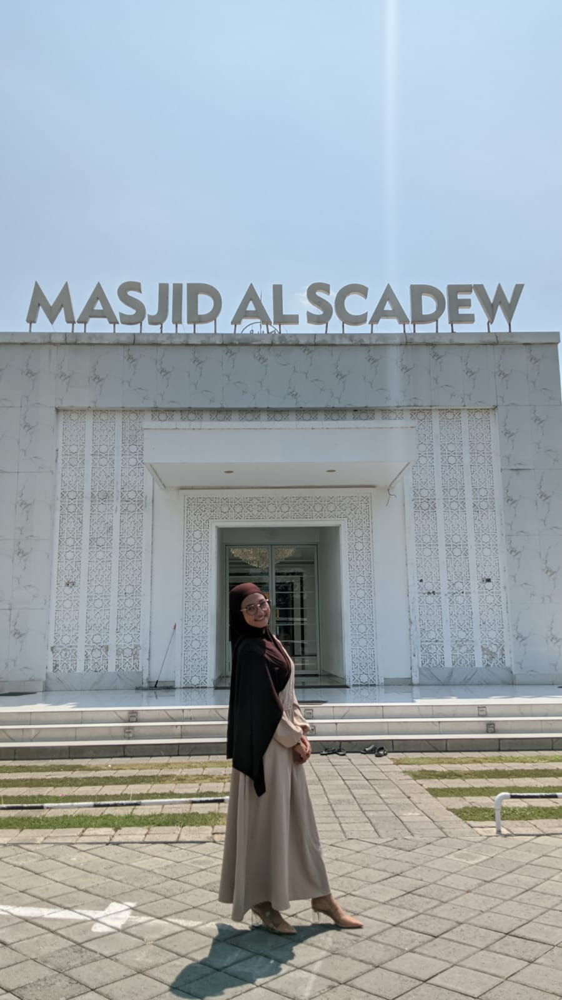

📱 +62 852-3198-3684
✉️ noviarahma709@gmail.com
📍 Wates, Slahung, Ponorogo

Saya Novia Rahmawati, mahasiswa Teknik Informatika yang memiliki semangat untuk belajar dan mencoba hal-hal baru. Saya memiliki kemampuan komunikasi, mampu bekerja sama dalam tim, bertanggung jawab, serta tertarik pada bidang teknologi dan pengembangan diri.
Teknik Informatika | 2025 - Sekarang
Teknik Jaringan Komputer & Telekomunikasi | 2022 - 2025
Aktif dalam kegiatan organisasi, administrasi, dan koordinasi kegiatan sekolah.
Mengikuti kegiatan kepencintaalaman, pendidikan dan pelatihan, serta kegiatan sosial dan konservasi.
Berpartisipasi dalam kegiatan organisasi dan program kerja mahasiswa Informatika.
Berpartisipasi dalam kegiatan kemahasiswaan dan program kerja Fakultas Teknik.
Membantu administrasi, membuat laporan kegiatan, melayani tamu, dan mengelola arsip.
Melayani pelanggan, mengelola transaksi penjualan, serta menjaga kebersihan dan kerapian stand.
Semester Gasal 2025/2026 – Kelas D
| No. | Mata Kuliah | Hari | Jam | Ruang | SKS |
|---|---|---|---|---|---|
| 1 | Praktikum Algoritma Pemrograman | Senin | 06.50 | D403 | 1 |
| 2 | Praktikum Pemrograman Web | Senin | 08.30 | F507 | 1 |
| 3 | Pemrograman Web | Senin | 09.20 | D402 | 2 |
| 4 | Jaringan Komputer | Senin | 12.30 | D410 | 3 |
| 5 | Sistem Operasi | Senin | 15.30 | D405 | 3 |
| 6 | Pemrograman Berorientasi Objek | Selasa | 06.50 | D404 | 3 |
| 7 | Matematika Diskret | Selasa | 12.30 | D401 | 3 |
| 8 | Struktur Data | Rabu | 15.30 | D402 | 3 |
Instagram: @nvaaraaaa
GitHub: GitHub Novia